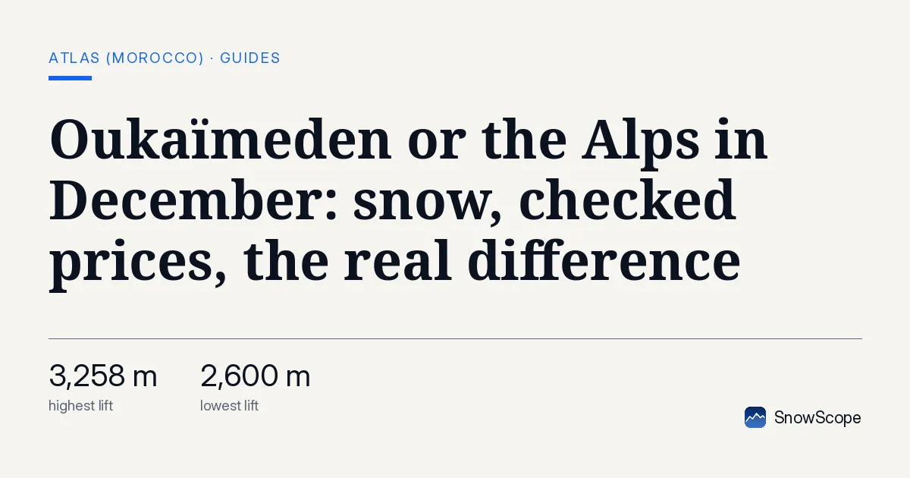
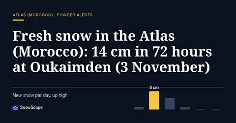

Oukaïmeden or the Alps in December: snow, checked prices, the real difference
On a typical 15 December, Oukaïmeden sits at 16 cm of snow at mid-height while Val Thorens reaches 89 cm and Chamonix 65 cm. We found no official online tariff for Oukaïmeden, so we compared what we could verify: 46 winters of snow history and the actual lift prices from the Alps.
See the live snow forecast for Oukaïmeden in the SnowScope appSnow depth, powder alerts and the 3D map, free.
Snow depth in early December across three ranges
By 15 December in a typical winter, the story changes sharply with height and location. Oukaïmeden's mid-slopes (2,929 m) hold just 16 cm, and only one winter in nine reaches 50 cm. Val Thorens' mid-mountain (2,498 m), lower than Oukaïmeden, shows 89 cm with half of all winters at 50 cm or deeper. Chamonix's Grands Montets mid-height (2,001 m), lower still, records 65 cm in typical Decembers.
The heights tell the story. At Val Thorens' summit (3,175 m) you find 159 cm on 15 December. At Chamonix's top (2,768 m), 157 cm. Oukaïmeden's peak (3,258 m) reaches 17 cm. The Atlas receives less moisture in December; the Alps face Atlantic storms and benefit from their higher mid-slopes. For December skiers, the Alps offer far more reliable cover.

What chances of good cover really mean
On 15 December, four winters in five at Val Thorens sit at 50 cm or more. At Chamonix, it is three in five. At Oukaïmeden, only one in nine. This matters if you book a week ahead: the Alps almost guarantee skiable snow by mid-month; the Atlas does not. The difference widens towards Christmas. By 25 December, 93 % of winters at Val Thorens exceed 50 cm, versus just 13 % at Oukaïmeden mid-slope.
Lift passes: what we can verify
Val Thorens offers clarity. The Les 3 Vallées adult day pass costs 75.70 euros from 5 to 18 December 2026 (low season), then 84.20 euros from 19 December. Chamonix's Mont-Blanc Unlimited ranges from 75 to 104 euros per day between 28 November and 18 December, with the price rising each week.
Oukaïmeden presents no official online tariff as of 13 November 2026. Passes and rentals are settled on site. We publish no price rather than guess. For a European skier, the lack of price certainty adds to the booking risk.
Where the real savings lie
If you live in Marrakech, Oukaïmeden is 50 km away: no flight, no week of rental, no hotel far from home. For a local, that is a true advantage. For a European, the flight to Morocco replaces the flight to France, and costs similar money. The pass price matters less than the snow odds: paying 75 euros for 89 cm is better value than paying nothing for 16 cm and finding rocks.
When Oukaïmeden makes sense
December is early in the Atlas cycle. February and March are the peak months: mid-mountain averages 44 cm in February and 53 cm in March, with half of winters reaching 50 cm or more. A December trip works best as a quick outing from Marrakech after fresh snow, not as a booked holiday months in advance. By contrast, the Alps keep December skiers safer with their reliable mid-month depth and their higher summits.
Tips for skiers
- Alps before 19 December: book the Les 3 Vallées low-season rate at Val Thorens for guaranteed mid-mountain snow at 89 cm typical.
- Chamonix: prices rise through December; book early for the 75-euro early-season rate if you can commit to dates before 18 December.
- Oukaïmeden: treat it as a last-minute day trip from Marrakech after a storm, not a week-long booking. Ask lift prices on arrival.
- For a European ski week in December, the Alps offer better odds than the Atlas. Plan Oukaïmeden for February or March instead.
- Check the SnowScope snow map the week before you travel; conditions vary far more in the Atlas than in the Alps.
About these numbers
Resort snow depths are the deepest snow on the resort's upper slopes on the date shown; they are estimates for an area, not a measurement at one point. Forecasts can change. Always read the official avalanche bulletin before going off-piste.
Cite this report
For research, teaching or the press: the numbers and charts are free to reuse under CC BY 4.0 with this citation.
SnowScope (2026), Oukaïmeden or the Alps in December: snow, checked prices, the real difference, https://snowscope.app/blog/en/2026/11/oukaimeden-ou-alpes-week-end-ski-decembre-prix.html, accessed 2026-11-14
SnowScope (Atlas Labs). (2026, November 14). Oukaïmeden or the Alps in December: snow, checked prices, the real difference. SnowScope snow reports. https://snowscope.app/blog/en/2026/11/oukaimeden-ou-alpes-week-end-ski-decembre-prix.html
BibTeX
@misc{snowscope2026oukaimedenoualpesweekend,
author = {{SnowScope (Atlas Labs)}},
title = {Oukaïmeden or the Alps in December: snow, checked prices, the real difference},
year = {2026},
month = nov,
howpublished = {\url{https://snowscope.app/blog/en/2026/11/oukaimeden-ou-alpes-week-end-ski-decembre-prix.html}},
note = {Published 2026-11-14 13:29 UTC; accessed 2026-11-14}
}· CC BY 4.0 · Methods, data and tools →
Oukaïmeden: snow and temperature by height, this winter vs last (tools) →
Follow Oukaïmeden
Free: a message when fresh snow is coming, and the forecast every morning.
More snow reports

December brings only 18 cm typical depth at mid-mountain in Oukaimeden, versus 53 cm in March. Early season is thin but possible. Data 13 November 2026.

Oukaimden got 14 cm of new snow in the last 72 hours, 5 cm of it in the last 24 hours. It now has about 3 cm on its upper slopes, according to our …

The ski resorts of the Atlas have no snow on their slopes today. SnowScope only finds snow on the highest summits: about 80 km² of snow-covered …